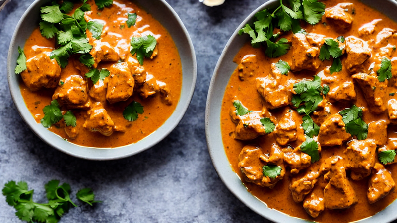
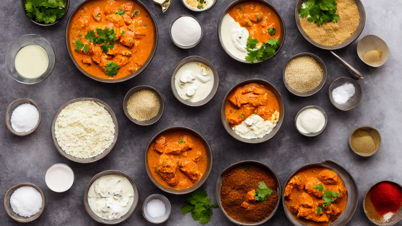
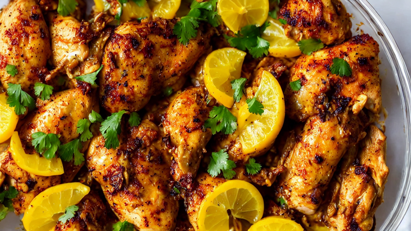
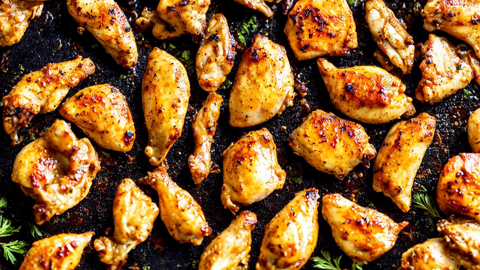
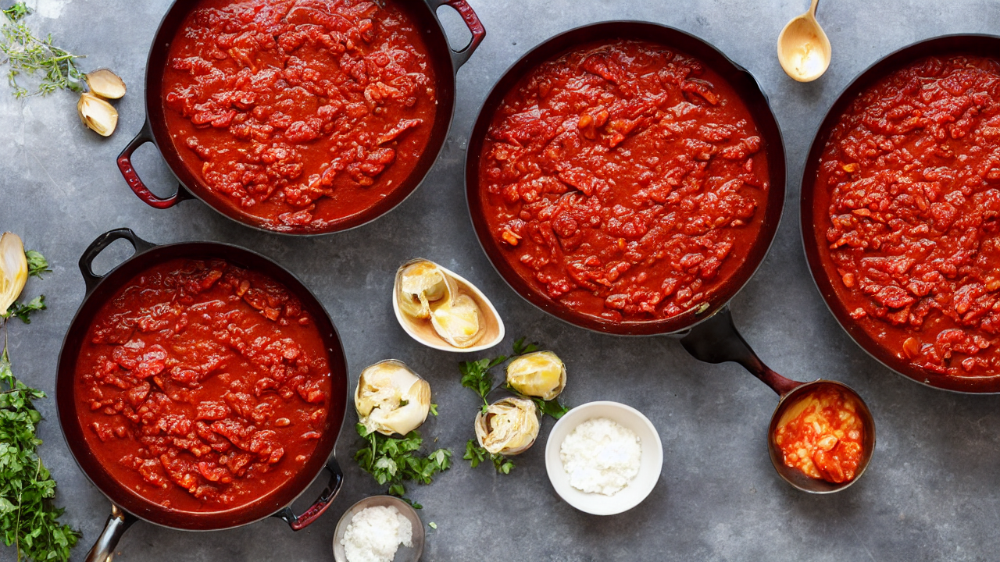
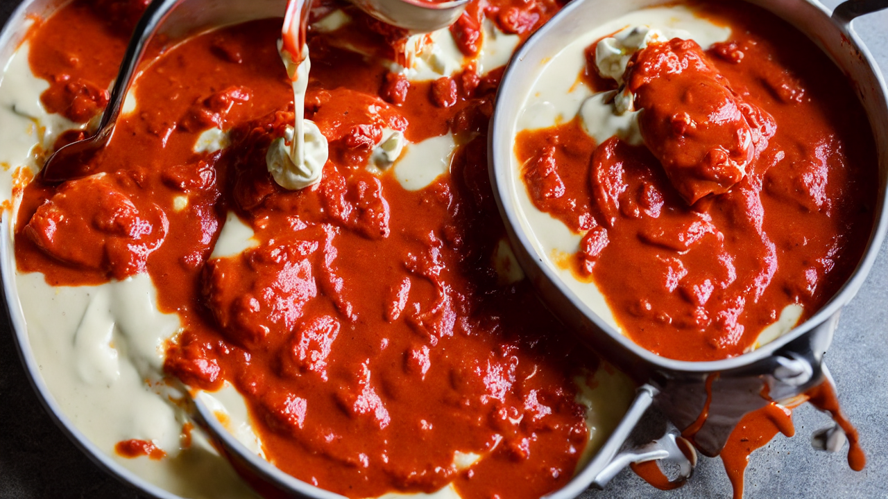
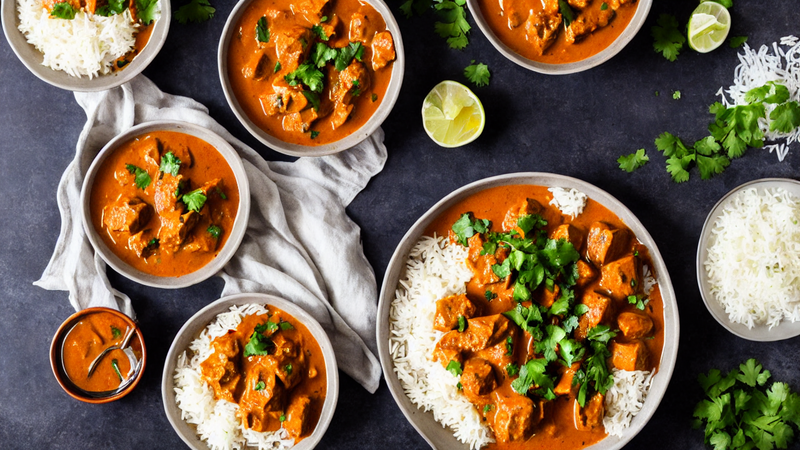

Butter Chicken | Rich, Creamy & Better Than Takeout
This homemade Butter Chicken is incredibly rich, creamy, and packed with warm spices. Tender chicken in a velvety tomato-cream sauce that's better than any restaurant. A beloved Indian classic you can make in 40 minutes!
Ingredients
- chicken thighs
- yogurt
- garam masala
- turmeric
- cumin
- paprika
- garlic
- ginger
- canned tomatoes
- heavy cream
- butter
- fresh cilantro
Instructions

Butter Chicken is one of the most beloved dishes on the planet. Rich, creamy, and packed with warm spices. Today we're making a version that rivals your favorite Indian restaurant.

You'll need: chicken thighs, yogurt, garam masala, turmeric, cumin, paprika, garlic, ginger, canned tomatoes, heavy cream, butter, and fresh cilantro.

Marinate the chicken in yogurt, garam masala, turmeric, and salt for at least 30 minutes. This tenderizes the meat and infuses it with incredible flavor.

Sear the marinated chicken pieces in butter until charred on the edges. Don't cook them through yet — they'll finish in the sauce. Set them aside.

In the same pan, cook garlic and ginger until fragrant. Add crushed tomatoes, garam masala, cumin, and paprika. Simmer for 10 minutes until thick and deeply flavored.

Blend the sauce until smooth, then stir in heavy cream and a generous knob of butter. This is what makes it butter chicken — don't hold back!

Add the chicken back in and simmer for 10 minutes. Serve over basmati rice with warm naan bread and fresh cilantro. This is comfort food at its absolute finest!